조사방법론. 7. 델파이, AHP, 컨조인트분석
chapter 1. 델파이 조사
1. 개념
델파이 방법(Delphi Method)은 의사결정과 미래 예측을 위해 전문가의 의견을 체계적이고 신뢰할 수 있는 방식으로 수렴하는 방법이다. 이 방법은 다양한 분야에 걸쳐 활용되며, 특히 불확실한 미래 상황을 전망하는 데 있어 중요한 도구로 자리 잡고 있다. 델파이 방법은 전문가들의 의견을 익명으로 수집하고, 반복적인 피드백 과정을 거쳐 점진적으로 의견의 합의를 도출하는 방식으로 이루어진다.
델파이 방법은 1948년 미국 RAND 연구소에서 처음 개발되었다. 제2차 세계대전 이후 급변하는 기술 환경과 군사 전략 수립의 필요성에 대응하기 위해, 미래의 전쟁 양상과 기술 발전 방향을 예측할 목적으로 고안된 것이다. 초기에는 핵전쟁 가능성, 무기 체계 개발, 군사 전략 등의 국방 관련 주제가 주로 다루어졌지만, 1960년대 이후에는 정보기술, 연구개발(R&D), 교육, 사회과학 등 다양한 분야로 적용 영역이 확대되었다.
델파이 방법은 종종 브레인스토밍 회의나 일반 설문 조사와 혼동되지만, 이들과는 중요한 차이를 지닌다. 브레인스토밍은 참가자 간의 자유로운 의견 개진을 장점으로 하지만, 발언권이 강한 소수의 의견에 전체 논의가 왜곡될 위험이 존재한다. 반면, 델파이 방법은 응답자의 익명성을 보장함으로써 이러한 영향을 최소화하고, 개별 전문가의 독립적인 판단을 유지한 채 집단적인 통찰을 이끌어낸다.
일반 설문 조사와도 구별된다. 설문 조사는 대체로 현재 상황이나 개인의 만족도를 파악하는 데 초점이 맞춰져 있다. 이에 반해, 델파이 방법은 전문가의 미래 예측 능력을 활용하여 향후 변화 가능성과 대응 방안을 도출하는 데 중점을 둔다. 예를 들어, 단순히 “현재 서비스에 대한 만족도”를 묻는 질문은 델파이 방식에 부적절하다. 대신, “향후 10년 내 이 산업에서 핵심적인 변화 요인은 무엇인가?”와 같은 전망 중심의 질문이 보다 적합하다.
결국 델파이 방법은 단순한 의견 수렴이나 자료 조사 이상의 성격을 가진다. 반복적이고 구조화된 피드백 과정을 통해 전문가들의 견해를 정제하고, 특정 개인의 영향력에서 벗어난 객관적 합의를 도출함으로써 미래를 예측하는 데 효과적인 수단이 된다. 이는 브레인스토밍이나 일반 설문과는 본질적으로 다른 방식이며, 특히 전략 수립과 정책 기획, 기술 예측 등 고차원의 의사결정 상황에서 그 진가를 발휘한다.
2. 델파이 방법의 핵심 개념
전문가 의견 탐색 및 수렴
델파이 방법은 특정 주제에 대해 전문가들의 의견을 체계적으로 탐색하고 반복적으로 수렴하는 과정을 통해 최적의 결론을 도출하는 기법이다. 이 과정은 단순히 여러 사람의 의견을 모으는 것이 아니라, 각 전문가의 독립적인 판단을 익명으로 수집하고, 피드백을 제공하며, 반복적으로 의견을 조정해 나가는 구조를 가진다.
이 방법은 “다수의 전문가 의견이 단일 전문가보다 더 신뢰할 수 있다”는 가정에 기반하고 있으며, 특히 개별 의견 간의 편향이나 극단적 견해를 완화하고 집단 지성을 활용함으로써 보다 객관적이고 실현 가능성 높은 결론을 도출하는 데 유리하다. 따라서 델파이 방법은 정답이 명확하지 않거나 예측이 어려운 문제 상황에서 합리적 집단 합의에 도달하는 데 매우 효과적인 도구로 활용된다.
설문지를 통한 의견 수렴
델파이 방법에서는 전문가들이 일련의 설문지를 통해 반복적으로 의견을 제시하고 조정한다. 이 설문은 한 번으로 끝나는 것이 아니라, 2차, 3차에 걸쳐 반복적으로 시행되며, 각 라운드 후에는 집단의 응답 경향이 요약된 피드백이 제공된다. 이를 통해 전문가들은 다른 이들의 응답을 참고하면서 자신의 견해를 수정하거나 유지할 수 있는 기회를 갖게 된다.
이 과정은 익명으로 진행되어, 특정 개인의 사회적 지위나 영향력이 결과에 영향을 미치는 것을 방지한다. 결과적으로, 개인의 주관적 판단보다는 집단적이고 합리적인 판단에 기반한 의견 수렴이 이루어지며, 이는 보다 신뢰성 높은 합의에 도달하도록 돕는다.
통제된 피드백 과정
델파이 방법의 핵심 중 하나는 통제된 피드백이다. 각 라운드가 끝난 후, 연구자는 참여 전문가들에게 다른 응답자들의 응답 분포나 평균, 중앙값 등 요약된 통계 정보를 제공한다. 이를 통해 전문가들은 자신의 견해가 전체 집단의 의견과 어느 정도 일치하거나 차이가 나는지를 확인할 수 있다.
이러한 피드백은 단순한 정보 제공이 아니라, 의견의 수정과 재조정을 유도하는 통제된 메커니즘이다. 특히 극단적이거나 소수의견은 다수의 경향을 참고하면서 점차 조율되고, 집단 전체가 보다 합리적이고 신뢰할 수 있는 합의점으로 수렴하게 된다. 이 과정은 무작위적인 토론이 아닌, 체계적이고 점진적인 의견 정제의 역할을 한다.
익명성 보장
델파이 방법은 모든 응답 과정을 익명으로 진행하여, 특정 개인의 의견이 다른 전문가들의 판단에 직·간접적으로 영향을 미치는 것을 차단한다. 이는 집단 토론에서 흔히 발생할 수 있는 편승 효과(Bandwagon Effect)나 후광 효과(Halo Effect)와 같은 심리적 편향을 줄이는 데 중요한 역할을 한다.
예를 들어, 명망 있는 전문가의 발언이 다른 참여자들에게 과도한 영향을 미치는 것을 방지함으로써, 각 전문가가 자신의 전문성과 판단에 근거한 독립적인 응답을 할 수 있도록 돕는다. 이러한 익명성은 델파이 방법의 객관성과 신뢰성을 높이는 핵심 요소 중 하나다.
반복적 절차
델파이 방법은 단회성 조사에 그치지 않고, 여러 차례 반복되는 의견 수렴 과정을 통해 전문가들의 판단을 점진적으로 정제해 나가는 특징을 갖는다. 각 회차에서는 이전 라운드의 요약 결과와 통계적 피드백이 제공되며, 전문가들은 이를 참고하여 자신의 응답을 유지하거나 수정할 수 있다.
이러한 반복적 절차를 통해 극단적인 의견은 완화되고, 전문가 집단 내 합의에 가까운 결론에 도달하게 된다. 이 과정은 보통 2~4회 정도 반복되며, 응답의 변화 폭이 줄어들고 의견이 수렴되면 종료된다. 즉, 반복적 피드백과 응답 조정을 통해 보다 신중하고 타당한 합의된 전망이나 판단을 얻을 수 있다.
3. 델파이 방법 절차
(1) 문제 정의
델파이 방법의 첫 단계는 연구 주제를 명확히 설정하고, 그 목적을 구체화하는 것이다. 이는 전체 조사 과정의 방향을 결정짓는 핵심 단계로, 무엇을 예측하고자 하는지, 어떤 결론을 도출하려는지를 명확히 해야 한다.
예를 들어, “향후 10년간 인공지능이 고등교육에 미치는 영향”이라는 주제를 설정할 경우, 단순한 기술 동향을 넘어 교육 제도, 교사 역할 변화, 학습 방식의 진화 등 다양한 측면을 고려할 필요가 있다.
문제 정의가 불명확하거나 포괄적이면, 전문가들이 일관된 방향으로 의견을 제시하기 어려워지고, 의견 수렴도 분산될 수 있다. 따라서 명확하고 구체적인 조사 목적과 기대 성과를 설정하는 것이 성공적인 델파이 조사의 출발점이다.
(2) 응답 패널 구성
델파이 방법에서 응답 패널의 구성은 조사 결과의 질을 좌우하는 핵심 요소이다. 패널은 보통 15~35명 규모로 구성되며, 최소 4명의 전문가는 반드시 포함되어야 한다. 이는 다양한 관점을 반영함과 동시에 의견의 신뢰성을 확보하기 위함이다.
패널 구성을 위해서는 예상 응답률(일반적으로 60~80%)을 고려하여 여유 있는 인원을 사전에 확보해야 한다. 예를 들어, 25명의 유효 응답을 목표로 할 경우, 최소 30~40명의 잠재 패널 명단을 준비하는 것이 바람직하다.
또한 패널 참여자는 조사 목적을 정확히 이해하고 있어야 하며, 해당 분야에서의 전문성과 경험을 갖춘 인물이어야 한다. 이는 단순한 의견이 아닌, 전문적 통찰이 반영된 정제된 응답을 유도하기 위해서다.
패널 구성 시 연구자는 다음 기준을 고려해야 한다.
- 다양한 하위 분야 또는 시각을 대표할 수 있는 구성
- 이질성과 동질성 간의 균형 유지
- 반복적 참여가 가능한 일정 여유
적절하게 구성된 패널은 의견 수렴 과정의 신뢰성을 높이고, 보다 정확한 미래 예측과 정책 제언을 가능하게 한다.
(3) 설문지 구성 및 문항 검증
델파이 방법에서 설문지는 전문가의 의견을 체계적이고 명확하게 수렴하기 위한 핵심 도구이다. 따라서 설문지는 문제 정의에 부합하면서도 응답자의 이해를 돕고 부담을 줄이는 방향으로 설계되어야 한다.
문항 구성 시 다음의 원칙을 따른다.
- 개방형 문항: 선택 보기 구성이 어려운 탐색적 질문이나 주관적인 의견을 수렴할 때는 개방형 문항을 사용한다. 이는 전문가의 자유로운 사고를 유도하고, 다양한 아이디어를 수집하는 데 유리하다.
- 선택형 문항: 선택지가 명확한 경우, 객관식 문항을 사용하여 응답자의 부담을 줄이고 응답 일관성을 높인다. 반복 회차에서는 초기 응답을 바탕으로 선택지를 구성할 수 있다.
설문지는 사전 검토 및 문항 검증 절차를 반드시 거쳐야 한다. 이를 위해 보통 5인 이내의 관련 분야 전문가를 대상으로 사전 조사(pilot test)를 실시하고, 다음과 같은 사항을 점검한다.
- 문항이 모호하거나 중복되지는 않는지
- 질문의 의도와 어휘가 명확한지
- 문항 순서가 논리적이며 응답 흐름에 적절한지
- 불필요한 문항은 없는지 또는 중요한 문항이 누락되지 않았는지
이 과정을 통해 설문지의 타당성(validity)과 명확성(clarity)을 확보할 수 있으며, 응답자의 이해도와 응답률을 높이는 데 기여한다. 궁극적으로 정제된 설문지는 반복 회차마다 신뢰도 높은 의견 수렴을 가능하게 하고, 델파이 연구의 질을 결정짓는 핵심 요소가 된다.
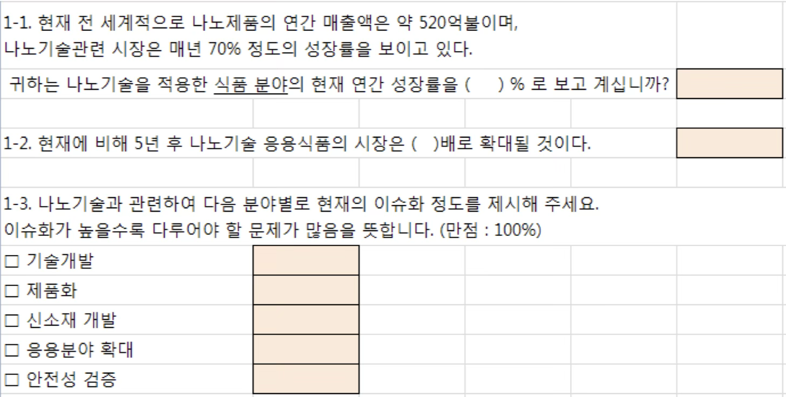
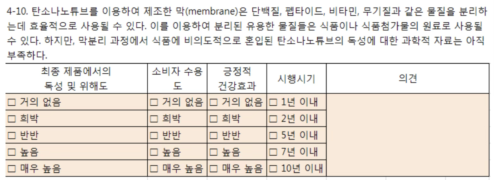
(4) 1차 설문조사 실시 및 분석
1차 설문조사는 전문가 패널에게 최종적으로 확정된 설문지를 송부함으로써 시작된다. 이때 조사의 목적, 회차 구성, 응답 방식, 일정(예: 2주 이내 회신 요청) 등이 명확하게 안내되어야 하며, 전자메일, 우편, 또는 온라인 플랫폼을 통해 진행될 수 있다.
1. 설문 실시 방법
- 설문 참여에 대한 동의를 얻고, 응답의 익명성과 기밀성을 보장한다.
- 설문 기간과 회신 방법을 구체적으로 안내한다.
- 온라인 설문 시스템(예: Google Forms, LimeSurvey 등)을 활용하면 관리가 용이하다.
2. 응답 자료 분석
- 빈도분석을 통해 각 문항의 응답 분포를 확인하고, 중복되거나 비효율적인 문항 제거를 고려한다.
- 개방형 문항의 응답은 내용분석(content analysis)을 통해 핵심 키워드와 공통된 의견을 도출하고, 이를 선택형 보기로 재구성하여 다음 회차 설문에 반영한다.
3. 응답 일치도 분석 기준
델파이 방법은 의견 수렴의 정도(합의 정도)를 확인하는 데 중점을 둔다. 이를 위해 다음과 같은 통계 지표를 활용하여 응답의 일치도를 판단한다: 응답 일치도
리커트 척도 : IQR 1이하, 변동계수 (=표준편차/평균) 0.5 이하
비율 척도 : 변동계수 0.5 이하
객관식 선택 문항 : 50%~75% 이상
IQR(Interquartile Range)는 중앙 집중성을 확인하는 지표로, 값이 작을수록 의견이 모여 있음을 의미한다. 변동계수(CV)는 상대적 분산 정도를 나타내며, 평균에 대한 표준편차의 비율로 계산된다. 객관식 선택 문항은 특정 선택지에 응답이 집중되어 있는지를 통해 합의 여부를 판단할 수 있다.
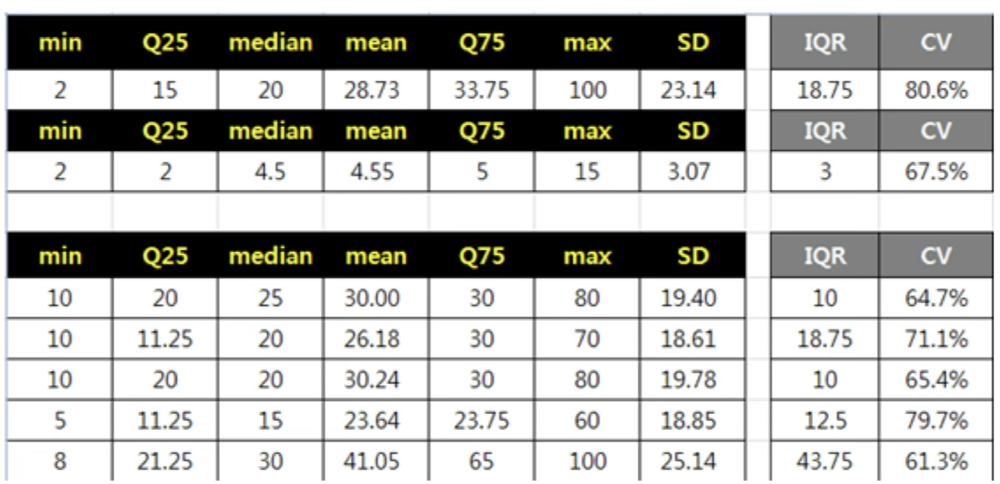
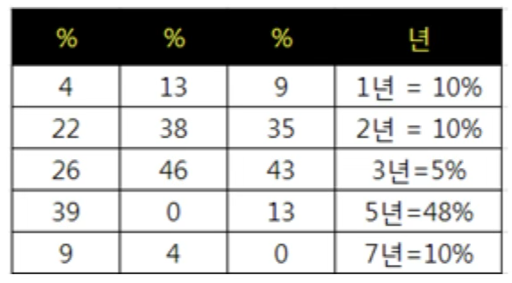
(5) 2차 설문지 구성
2차 설문지는 1차 조사 결과를 바탕으로 정교하게 구성된다. 이 과정에서는 응답 일치도가 낮은 문항을 중심으로 표현 방식이나 선택지를 조정하여 응답자의 이해를 돕는다. 특히 개방형 문항에서 도출된 주요 응답을 기반으로 객관식 보기 항목을 구성함으로써, 명확하고 구조화된 응답을 유도할 수 있다.
또한 1차 설문 결과 요약을 함께 제공하여, 전문가들이 다른 응답자들의 평균적 견해를 참고한 뒤 자신의 응답을 조정할 수 있도록 한다. 이를 통해 응답 간의 극단적 편차를 줄이고, 보다 높은 합의 수준에 도달할 수 있다. 2차 설문은 단순한 반복이 아니라, 의견 수렴을 위한 정제와 피드백 조정의 핵심 단계로 작용한다.
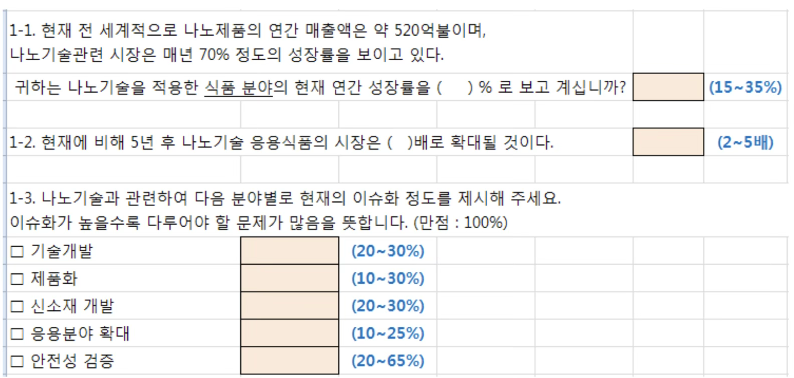
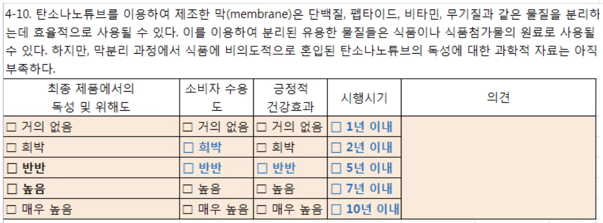
(6) 2차 설문조사 실시
2차 설문은 수정된 문항을 반영하여 전문가 패널에게 재송부하는 단계로, 설문은 전자메일이나 우편 등의 방식으로 배포되며, 조사 목적과 일정이 명확하게 안내된다. 이 단계에서는 전문가들이 1차 조사 결과를 바탕으로 자신의 의견을 재검토하고 조정할 기회를 갖는다.
회수된 응답은 통계적으로 분석되어 응답 일치도를 다시 평가하며, 의견의 수렴 정도를 확인한다. 특히, 의견 분산이 줄어들었는지, 특정 문항에 대한 합의가 형성되었는지를 중점적으로 파악한다. 필요에 따라 추가적인 반복 조사를 고려할 수 있다.
(7) 최종 결과 보고서 작성
파이 조사의 마지막 단계는 전체 조사 과정을 정리하고, 응답 분석 결과 및 전문가 의견의 수렴 과정을 체계적으로 요약한 최종 보고서를 작성하는 것이다. 이 보고서에는 설문 설계 및 조사 절차, 각 라운드에서 수집된 응답의 통계적 분석 결과, 의견 변화의 양상, 최종적으로 도출된 합의 내용을 포함해야 한다.
작성된 결과 보고서는 정책 결정, 전략 수립, 연구 기획, 기술 예측 등 다양한 분야에서 의사결정의 근거 자료로 활용될 수 있다. 델파이 결과 제시방법은 다음과 같다.
중요도 척도 : 최빈값 > 중위값과 IQR (Inter Quartile Range)
비율척도 : 중위값 > 평균, IQR (Inter Quartile Range)
선택 보기문항의 경우 빈도 백분율 (%) 표시
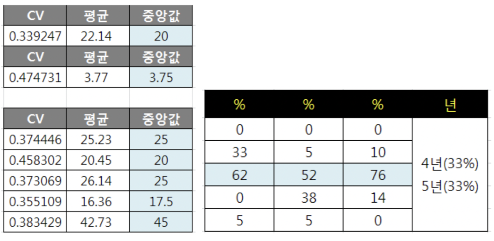
4. 한계
첫째, 미래에 대한 평가 절하 현상이 자주 발생한다. 인간의 사고방식은 현재의 상황을 과도하게 중요하게 여기고, 미래의 변화 가능성을 충분히 반영하지 못하는 경향이 있다. 전문가들조차도 현재를 기준으로 미래를 바라보기 때문에 혁신적이거나 급격한 변화보다는 점진적인 변화를 예상하는 경우가 많다. 따라서 델파이 방법을 사용할 때는 미래를 단순한 연장선으로만 평가하지 않도록 유도할 필요가 있다.
둘째, 단순화 경향이 나타난다. 전문가들은 복잡한 사회·경제적 요인을 충분히 반영하기보다 특정 변수나 트렌드만을 독립적으로 분석하는 경향이 있다. 이는 예측의 실용성을 높이는 장점도 있지만, 실제로 상호작용하는 다양한 요소들을 간과하게 만들어 예측의 정확성을 떨어뜨릴 수 있다. 특히, 시스템적인 사고 없이 개별 요소만 고려하면 현실과 동떨어진 결과가 나올 가능성이 높다.
셋째, 전문성의 한계와 비현실적인 전망도 문제로 작용할 수 있다. 델파이 방법이 전문가의 집단 지성을 활용하는 방식이긴 하지만, 모든 전문가가 동일한 수준의 통찰력을 갖고 있는 것은 아니다. 일부 전문가들은 자신의 경험과 직관에 의존하여 근거가 부족한 예측을 제시하기도 하고, 반대로 지나치게 이상적인 전망을 내놓기도 한다. 이러한 의견이 전체 결과에 영향을 미칠 경우, 실질적으로 활용하기 어려운 예측이 도출될 위험이 있다. 따라서 전문가 선정 과정에서 균형 잡힌 시각과 충분한 경험을 갖춘 인물을 포함하는 것이 중요하다.
마지막으로, 질문 형식의 명확성과 목적성이 핵심적인 역할을 한다. 델파이 방법에서 활용되는 질문은 예측의 방향성을 결정하는 중요한 요소이므로, 모호한 표현을 피하고 하나의 질문이 하나의 명확한 주제를 다루도록 구성해야 한다. 질문이 불명확하면 전문가들의 응답이 일관성을 잃거나 지나치게 광범위해질 수 있으며, 이로 인해 최종적인 합의 도출이 어려워질 수 있다.
결론적으로, 델파이 방법이 효과적인 예측 도구가 되기 위해서는 미래의 변화 가능성을 충분히 고려하고, 단순화를 경계하며, 전문가 의견의 신뢰성을 검토하고, 질문 설계를 체계적으로 진행해야 한다. 이를 보완할 수 있다면 델파이 방법은 보다 정교하고 신뢰도 높은 미래 예측을 가능하게 할 것이다.
chapter 2. AHP 방법
AHP(Analytic Hierarchy Process)는 Thomas Saaty(1980)가 제안한 계량적 의사결정 기법으로, 가치 평가 및 복잡한 의사결정 문제 해결을 위한 방법론이다. 이 기법은 계층구조 원리, 우선순위 결정 원리, 일관성 원리를 기반으로 의사결정 대안을 평가하며, 다양한 대안을 다수의 목표와 비교하여 최적의 선택을 도출하는 데 활용된다. AHP는 두 가지 핵심 과정을 통해 문제를 분석한다.
첫째, 정성적 혹은 무형적 특성을 상대적 비율 척도를 이용해 수량화하여 평가할 수 있도록 한다.
둘째, 복잡한 문제를 점차 작은 요소로 분해하여 이원 비교를 수행함으로써 보다 단순한 형태로 의사결정을 진행한다.
이를 위해 의사결정 대안을 평가할 수 있는 요소들을 계층 구조로 구성하며, 각 계층의 요소들은 평가자의 지식, 경험, 직관을 바탕으로 상대적으로 비교된다. 이러한 비교 과정을 통해 의사결정 대안을 수량화하여 최적의 대안을 선택할 수 있도록 지원하는 것이 AHP의 핵심 원리이다.
1. AHP 주요 특징
AHP는 복잡한 의사결정 문제를 체계적으로 분석하고 해결하기 위한 방법론으로, 여러 대안 중에서 최적의 선택을 도출하기 위해 다음과 같은 절차적 특징을 갖는다.
우선, AHP는 문제를 구조화하기 위해 계층적 구조를 구성한다. 이는 가장 상위 수준의 의사결정 목표에서 출발하여, 그 아래 기준(criteria), 하위기준(sub-criteria), 그리고 최종적으로 대안(alternatives)으로 이어지는 방식이다. 이러한 계층 구조는 문제를 명확하게 시각화하고, 각 구성 요소 간의 관계를 체계적으로 분석할 수 있도록 한다.
다음으로, AHP는 쌍대비교(pairwise comparison)를 통해 각 요소의 상대적 중요도를 평가한다. 이때 Saaty가 제안한 1~9의 정수 척도를 사용하여 두 요소 간 우선순위를 수치화하며, 이를 통해 각 요소의 가중치(weight)를 산출한다. 이 과정은 정성적 판단을 정량적으로 변환하는 데 핵심적인 역할을 한다.
이렇게 도출된 비교 결과는 판단 행렬(judgment matrix)로 구성되며, 이에 대해 고유값 분석(eigenvalue analysis)을 실시하여 일관성을 검토한다. 특히 일관성 지수(Consistency Index, CI)와 일관성 비율(Consistency Ratio, CR)을 계산하여 응답의 논리적 일관성이 유지되고 있는지를 평가하고, 수용 가능한 범위(CR < 0.1)를 넘을 경우 재검토가 요구된다.
마지막으로, 계층 구조의 각 수준에서 산출된 가중치를 종합하여 각 대안의 종합 점수를 계산한다. 이 점수를 바탕으로 가장 높은 평가를 받은 대안을 최적의 선택으로 결정하게 된다. 이를 통해 AHP는 복수의 기준과 복잡한 평가 요소를 고려한 합리적 의사결정을 가능하게 한다.
2. AHP 기본 전제
AHP는 의사결정 과정에서 계층 구조 원리, 우선순위 결정 원리, 일관성 원리를 기본 전제로 한다.
먼저, 계층 구조 원리는 복잡한 의사결정 문제를 보다 작은 요소로 분해하여 구조화하는 개념이다. 이를 통해 목표, 평가 기준, 하위 기준, 대안 등을 체계적으로 정리할 수 있다.
둘째, 우선순위 결정 원리는 평가 요소 간 상대적인 중요도를 비교하여 가중치를 산출하는 과정이다. 이를 위해 이원 비교를 수행하며, 각 요소의 중요도를 수량화하여 최적의 의사결정을 도출할 수 있도록 한다.
셋째, 일관성 원리는 의사결정 과정에서 논리적 일관성을 유지하도록 검증하는 절차이다. AHP는 일관성 비율을 활용하여 평가자의 판단이 논리적으로 타당한지 확인하고, 신뢰할 수 있는 결과를 도출할 수 있도록 한다.
이러한 원리를 기반으로 AHP 방법을 적용하면, 정성적 평가 요소에 대한 가중치를 산정할 수 있으며, 이를 통해 평가 요소들의 우선순위를 체계적으로 결정할 수 있다.
3. AHP 절차
AHP는 의사결정 문제를 체계적으로 분석하고 최적의 대안을 도출하기 위해 다음과 같은 절차를 따른다.
① 먼저, 의사결정 문제를 계층화하는 과정이 이루어진다. 이를 위해 의사결정과 관련된 평가 요소들을 목표, 기준, 하위 기준, 대안 등으로 구조화하여 계층적 모델을 구축한다. 이를 통해 복잡한 문제를 보다 명확하게 정리하고 분석할 수 있는 기반을 마련한다.
② 다음 단계에서는 전문가 설문조사를 통해 평가 요소 간의 상대 비교 데이터를 수집한다. 평가자는 계층 내 각 요소들을 쌍(pair)으로 비교하여 상대적 중요도를 판단하며, 이 데이터를 바탕으로 상대 비교 행렬이 생성된다.
③ 이후, 상대 비교 행렬을 이용하여 평가자의 응답 일관성을 검토하고 상대적 가중치를 계산한다. 이를 위해 일관성 지수(Consistency Index, CI)와 일관성 비율(Consistency Ratio, CR)을 활용하여 응답의 논리적 일관성을 평가한다. 평가자가 2인 이상인 경우, 일관성을 갖춘 응답자들의 상대 비교 행렬을 종합하여 단일 상대 비교 행렬을 도출하는 과정이 추가로 수행된다.
④ 마지막으로, 평가 대상이 되는 여러 대안들에 대한 우선순위를 산정한다. 이를 위해 각 의사결정 요소의 상대적 가중치를 종합하여 최종적으로 가장 적합한 대안을 선정할 수 있도록 한다.
4. 계층화
AHP 방법에서 가장 중요한 단계는 의사결정과 관련된 요소들을 계층화하는 과정이다. 계층화란 시스템을 구성하는 각 특성이나 속성을 기준으로 분할된 집단을 형성하는 과정으로, 하나의 집단이 특정한 하위 집단에만 영향을 주고, 동시에 상위 집단으로부터만 영향을 받는 구조를 의미한다.
계층 구조의 최상층에는 가장 포괄적인 의사결정 목표가 위치하며, 그 아래에는 목표 달성에 영향을 미치는 다양한 기준과 요소들이 하위 계층으로 배치된다. 계층이 낮아질수록 요소들은 보다 구체적인 특성을 가지게 되며, 각 계층 내 요소들 간에는 상호 비교가 가능해야 한다.
계층 설정 시 고려해야 할 사항
첫째, 계층의 완전성과 비완전성을 고려해야 한다. 하위 계층의 모든 요소가 직계 상위 계층의 모든 항목과 관련될 경우 완전한 계층이라 하며, 그렇지 않을 경우 비완전한 계층이라고 한다. Ramanujam과 Saaty(1981)는 AHP를 활용할 때 모든 계층을 반드시 완전하게 구조화할 필요는 없다고 주장하였으며, 일부 계층이 비완전하더라도 의사결정 과정에 큰 영향을 미치지 않는다고 보았다.
둘째, 계층 내 평가 요소의 개수가 적절하게 설정되어야 한다. 인간은 동시에 9개의 대상을 비교할 수 있는 인지적 한계를 가지며, 비교 항목의 개수가 10개 이상이 되면 응답의 일관성을 유지하기 어려워진다. 따라서 Saaty(1980)는 계층 내 요소의 개수를 5개~9개 정도로 유지하는 것이 적절하며, 평가 요소 간 상대적 중요도를 비교할 때는 9점 척도를 사용하는 것이 바람직하다고 제안하였다.
계층화의 기본 원칙과 단계
최상위 계층에는 의사결정의 목표를 설정한다.
중간 계층에는 목표 달성에 영향을 미치는 주요 평가 요소(기준 및 하위 기준)를 배치한다.
최하위 계층에는 최종적으로 평가할 여러 대안을 포함한다.
계층이 낮을수록 요소들은 보다 구체적이어야 하며, 계층 내 요소들 간에는 비교가 가능해야 한다.
각 계층의 요소들은 직계 하위 집단에만 영향을 미치며, 동시에 상위 계층으로부터만 영향을 받는다.
이러한 계층화 과정을 통해 복잡한 의사결정 문제를 구조적으로 정리할 수 있으며, 이를 기반으로 AHP를 활용한 체계적인 평가와 의사결정이 가능해진다.
5. 상대비교 행렬 및 일관성 비율
AHP에서 계층 구조가 완성되면, 각 계층 내 평가 요소들의 상대적 중요도를 평가하기 위해 상대 비교 행렬을 작성한다. 상대 비교 행렬은 대칭 행렬의 형태를 가지며, 행렬의 차수는 평가 요소의 개수를 의미한다.
절차
상대 비교 행렬을 구성하여 평가 요소 간 상대적 중요도를 비교한다.
상대 비교 행렬의 대각 원소는 1이며, 상·하 대칭 원소는 역수 관계를 가진다.
응답자의 판단 일관성을 검토하기 위해 일관성 지수(CI)를 계산한다.
난수 지수(RI)를 활용하여 일관성 비율(CR)을 구하고, CR이 10% 미만이면 일관성이 확보된 것으로 판단한다.
상대비교 행렬
평가 요소를 \(i,j\)쌍으로 비교할 때, 평가 요소 \(i\)의 상대적 중요도를 \(w_{i}\), 평가 요소 \(j\)의 상대적 중요도를 \(w_{j}\)라 하면, 상대 비교 행렬의 원소는 \(a_{ij} = \frac{w_{i}}{w_{j}}\)로 정의된다. 이때, 상대 비교 행렬은 다음과 같은 형태를 가진다.
\[A = \begin{bmatrix} a_{11} & a_{12} & \cdots & a_{1p} \\ a_{21} & a_{22} & \cdots & a_{2p} \\ a_{31} & a_{32} & \cdots & a_{3p} \\ \vdots & \vdots & \ddots & \vdots \\ a_{p1} & a_{p2} & \cdots & a_{pp} \end{bmatrix}\]
대각 행렬 원소: \(a_{ii} = 1\) (자기 자신과의 비교는 항상 1)
상대 비교 값: \(a_{ij}(i \neq j)\)는 기준 평가 요소 \(i\)가 평가 요소 \(j\)에 비해 중요하다고 판단되는 정도를 의미하며, Saaty(1980)가 제안한 1~9 척도를 사용하여 값을 입력한다. (예: 1/9, 1/8, …, 1, 2, …, 9)
대응 원소 관계: \(a_{ji} = \frac{1}{a_{ij}}\)
일관성 지수
상대 비교를 통한 평가에서 응답자의 판단에는 다소간의 논리적 오류가 발생할 수 있다. 이를 보완하기 위해 일관성 지수를 활용하여 응답의 일관성을 검토한다.
상대 비교 행렬이 완전히 일관성을 가지려면 \(a_{ij} \cdot a_{jk} = a_{ik}\) 관계가 성립해야 하며, 상대 비교 행렬의 최대 고유치(\(\lambda_{\max}\))는 평가 요소의 개수 \(n\)과 동일하게 된다. 이를 활용하여 Saaty(1980)는 일관성 지수를 다음과 같이 정의하였다.
\(CI = \frac{\lambda_{\max} - n}{n - 1}\).
일관성이 높은 경우: 응답자의 판단이 논리적으로 일관됨을 의미하며, 결과의 신뢰도가 높다.
일관성이 낮은 경우: 응답자의 판단 과정에서 일관성이 유지되지 않았음을 의미하며, 결과의 신뢰도가 낮아진다.
일관성 비율 (Consistency Ratio, CR)
Saaty(1980)는 상대 비교를 9점 척도로 수행할 경우, 평가 요소의 개수에 따라 사용할 수 있는 난수 지수를 제시하였다. 이를 활용하여 일관성 비율을 계산할 수 있다.
\(CR = \frac{CI}{RI}\): CR 값이 10% 미만이면 일관성이 확보된 응답으로 간주한다.
| 차수 (n) | 1 | 2 | 3 | 4 | 5 | 6 | 7 | 8 | 9 |
| RI | 0 | 0 | 0.58 | 0.9 | 1.12 | 1.24 | 1.32 | 1.41 | 1.45 |
6. 상대 중요도 계산
상대 비교 행렬을 통해 계층 내 평가 요소들의 상대적 중요도를 평가하고 일관성을 검증한 후, 최종적으로 상대적 중요도(가중치)를 산출하는 과정이 진행된다.
먼저, 상대 비교 행렬로부터 최대 고유치(\(\lambda_{\max}\))를 구하고, 이에 대응하는 고유 벡터를 도출한다. 고유 벡터의 각 원소는 평가 요소의 상대적 중요도를 나타내며, 모든 원소의 합이 1이 되도록 정규화하여 최종 가중치를 산출한다. 이를 위해 고유 벡터의 각 원소를 원소 합으로 나누어 정규화된 중요도 값을 얻는다.
계층이 2개 이상인 경우
의사결정 과정에서 일반적으로 계층은 2개 이상으로 구성된다. 이 경우, 각 계층별로 동일한 방법을 반복하여 평가 요소들의 가중치를 산출한다. 최하위 계층의 평가 요소에 대한 최종 가중치는 자신이 속한 계층의 가중치와 상위 계층의 평가 요소 가중치를 곱하여 계산된다. 즉, 상위 계층의 가중치는 하위 계층으로 전달되며, 이러한 과정이 반복되어 최종적으로 평가 요소들의 가중치가 결정된다. 이를 활용하여 의사결정의 대안들을 평가하고 최적의 선택을 도출할 수 있다.
다수의 평가자가 존재하는 경우
의사결정 과정에서 평가자가 2명 이상인 경우, 개별적으로 도출된 상대 비교 행렬을 종합하여 단일 그룹 상대 비교 행렬을 생성하는 과정이 필요하다. 이때 사용되는 대표적인 방법은 다음과 같다.
1. 그룹 평가 방법(Delphi 방법)
평가자들의 의견을 종합하여 하나의 상대 비교 행렬을 직접 작성하는 방법이다.
전문가 의견을 반복적으로 조정하여 합의된 평가 결과를 도출하는 것이 특징이다.
2. 개별 평가 후 그룹 전체 상대 비교 행렬 산출 방법
각 평가자의 상대 비교 행렬을 개별적으로 작성한 후, 이를 바탕으로 그룹 전체의 단일 상대 비교 행렬을 생성하는 방식이다.
Saaty(1980)는 이 방법에서 각 평가자의 상대 비교 행렬의 원소에 대해 기하 평균(geometric mean)을 적용하여 단일 비교 행렬을 생성하는 방법을 제안하였다.
Saaty(1980)의 기하 평균 방법은 계산이 간편하며, 행렬의 역수성을 유지할 수 있다는 장점이 있어 가장 널리 사용된다. 이후 개별 상대 비교 행렬로부터 그룹 전체 상대 비교 행렬을 얻는 다양한 방법이 연구되었지만, Saaty(1995)는 각 방법 간 결과 차이가 거의 없음을 주장하였다.
결론적으로, AHP를 통한 상대 중요도 산출 과정에서는 일관성 검증을 거쳐 신뢰성을 확보한 후, 고유 벡터를 이용하여 가중치를 계산하며, 다수 평가자의 의견을 반영할 경우 기하 평균을 활용하는 방법이 가장 효과적으로 평가된다.
7. AHP 활용 사례
네트워크 환경에서 발생하는 사이버 위협의 위협 수준을 정량적으로 산정하기 위해 계층 분석 기법을 적용할 수 있다. 사이버 위협 평가는 주로 정성적 요소를 기반으로 이루어지며, 주요 평가 항목으로는 감염 대상 획득, 감염 경로, 감염 시 증상, 방어 조치 난이도, 피해 자산 유형 등이 포함될 수 있다. 이러한 평가 요소들은 객관적인 정량화가 어려운 특성을 지니므로, AHP를 활용하여 계층적 구조를 설정하고 상대적 가중치를 산출함으로써 체계적인 위협도 평가가 가능하다.
최상위 계층: 사이버 위협도 산정을 위한 핵심 평가 요소(감염 대상 획득, 감염 경로, 감염 시 증상, 방어 조치 난이도, 피해 자산 유형)
중간 계층: 각 5개 평가 요소별 하위 평가 기준
최하위 계층: 사이버 위협의 개별 사례(대안), 즉 위협 발생 사례별 위협도 점수
여기서는 최상위 계층의 평가 요소 5개에 대한 상대적 가중치를 부여하는 방법을 설명한다. 동일한 방법을 적용하여 하위 계층에서도 각 항목의 가중치를 산정할 수 있다.
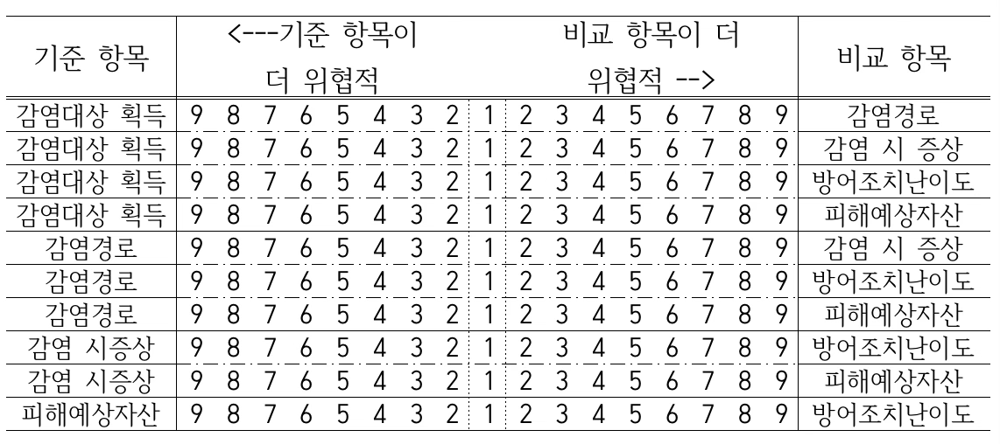
사이버 위협 관련 전문가 3명을 대상으로 설문 조사를 실시하여 상대비교 행렬을 얻었다. ID 1번, 2번 응답자의 일관성 비율이 10% 미만이었으므로, 이들만 응답의 일관성을 유지하였음을 알 수 있다.
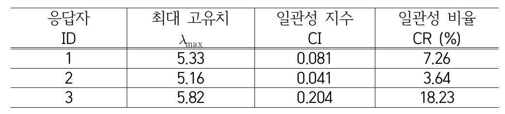
평가 일관성을 유지한 ID 1번, 2번 응답자의 상대비교 행렬을 이용하여 단일 상대비교 행렬을 구하면 아래와 같다. 단일 상대비교 행렬은 Saaty(1980)가 제안한 기하평균 방법을 이용하여 구해졌다.
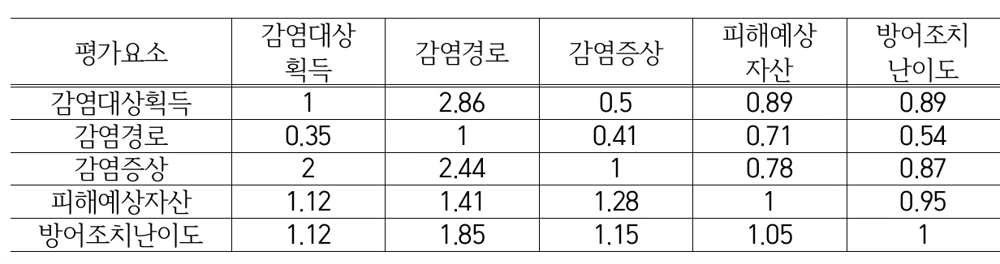
단일 상대비교 행렬의 최대 고유치는 5.127이므로 일관성 지수 CI=0.032이고, 일관성 비율 CR=2.8%이다. 상대비교 행렬의 최대 고유치에 대응하는 고유벡터는 다음과 같다. 각 평가요소의 가중치는 고유벡터의 합을 구하고, 대응하는 평가요소의 고유벡터 값을 합으로 나눈 값이다. 결과를 해석해 보면, 네트워크상에서 사이버 위협이 발생했을 때 피해예상자산이 감염경로에 비해 2배 더 위협적이라는 할 수 있다.
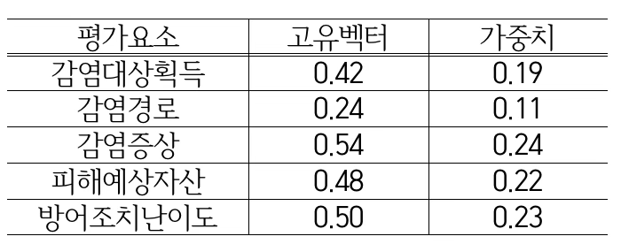
chapter 3. 컨조인트 분석
컨조인트 분석(Conjoint Analysis)은 소비자의 선호를 평가하고 예측하기 위해 설계된 다변량 통계 기법이다. 이는 제품 또는 서비스의 속성과 각 속성의 수준에 대한 소비자의 선호도를 분석하는 방법으로, 특히 마케팅, 제품 기획, 가격 결정 등의 분야에서 널리 활용된다.
컨조인트 분석의 기본 개념은 소비자가 제품을 개별 속성 단위가 아니라, 속성들의 조합(conjoint)으로 인식하고 평가한다는 점에 있다. 따라서 이 기법은 소비자의 실제 선택 과정과 유사한 환경을 모형화하여, 개별 속성이 소비자의 선택에 미치는 영향을 분해하고 추정하는 데 초점을 맞춘다.
1. 컨조인트 분석 개념
(1) 목적
컨조인트 분석은 제품 및 서비스 기획에서 중요한 의사결정을 내리는 데 활용되며, 주요 목적은 다음과 같다.
독립변수(속성)의 상대적 중요도를 분석하여 특정 제품이나 서비스의 평가 요소를 도출한다.
종속변수(소비자 선호도)에 미치는 영향을 정량적으로 측정하여 소비자가 무엇을 중요하게 여기는지를 파악한다.
최적의 속성 조합을 찾아 기업의 제품 기획 및 마케팅 전략에 반영하여 경쟁력을 강화한다.
(2) 개념
컨조인트 분석은 소비자가 제품의 다양한 속성을 어떻게 평가하고 선택하는지를 분석하기 위한 방법이다. 이 기법은 평가자들이 제시된 대안에 대해 응답한 결과를 바탕으로 각 속성 수준의 효용(utility)을 추정할 수 있도록, 요인 설계(factorial design)를 기반으로 분석을 수행한다.
실제 조사에서는 제품이나 서비스의 대안을 여러 속성의 조합으로 구성하여 제시하고, 소비자가 이들 조합 중 어떤 방식을 선호하는지를 평가하게 한다. 이를 통해 최적의 속성 조합을 도출하고, 제품 개발이나 마케팅 전략 수립에 활용할 수 있다.
’컨조인트(Conjoint)’라는 용어는 ’Consider’와 ’Jointly’의 합성어로, 소비자가 여러 속성을 함께 고려하여 평가한다는 개념을 반영하고 있다.
컨조인트 분석과 다차원척도법(Multidimensional Scaling) 비교
컨조인트 분석과 다차원척도법은 모두 소비자의 심리적 판단을 정량적으로 측정하기 위한 기법이라는 공통점을 가진다. 그러나 두 방법은 평가 대상을 제시하는 방식과 분석 초점에서 차이를 보인다.
- 컨조인트 분석은 제품이나 서비스의 속성을 요인 설계 방식으로 조합한 후, 응답자가 어떤 조합을 선호하는지 평가하게 함으로써 속성별 효용(utility)을 추정한다. 즉, 사전에 정의된 속성 조합을 바탕으로 선호 구조를 분석하는 데 중점을 둔다.
- 다차원척도법(MDS)은 소비자가 느끼는 제품이나 브랜드 간의 유사성 또는 선호도 차이를 바탕으로, 그 관계를 저차원의 공간에 시각화하는 방법이다. 평가자는 구체적인 속성보다는 전체적 인상이나 거리감을 기준으로 판단하게 되며, 분석 결과는 점 간의 거리로 나타난다.
요약하면, 컨조인트 분석은 속성 기반의 선택 분석에, MDS는 심리적 거리 기반의 포지셔닝 분석에 적합한 방법이다.
(3) 고려 사항
종속변수 측정상의 문제: 응답자의 선호나 선택을 어떻게 정량화할 것인지 명확히 설정해야 한다. 예를 들어, 순위(rank), 평점(rating), 선택(choice) 방식 중 어떤 방식을 택할지에 따라 분석 기법이 달라지고, 결과 해석에도 영향을 미친다.
독립변수 결합상의 문제: 독립변수(속성)들을 어떤 방식으로 조합해 제시할 것인지가 분석의 핵심이다. 전수조합(full-profile design)은 정보가 많지만 부담이 크고, 부분요인 설계(fractional factorial design)는 효율적이지만 정보 손실 위험이 있다. 따라서 연구 목적과 응답자의 인지 부담을 균형 있게 고려해 설계해야 한다.
(4) 기본원리
제품이나 서비스는 여러 속성의 조합으로 구성되며, 각 속성은 여러 수준을 가질 수 있다. 예를 들어, 스마트폰을 고려할 경우 다음과 같은 속성과 수준이 존재할 수 있다.
| 속성(Attribute) | 수준(Levels) |
| 화면 크기 | 5인치, 6인치, 7인치 |
| 배터리 용량 | 3000mAh, 4000mAh, 5000mAh |
| 가격 | 50만원, 70만원, 90만원 |
2. 컨조인트 분석 관련 용어 정리
1. Attribute (속성)와 Level (수준)
속성: 제품이나 서비스가 가지는 독립변수로, 소비자가 고려하는 주요 특성이다.
수준: 각 속성이 취할 수 있는 값. 컨조인트 분석에서는 최소 두 개 이상의 수준을 가져야 하며, 일반적으로 4~5개 이내로 설정하는 것이 적절하다.
예제: 휴대폰의 속성이 3개(화면크기, 배터리 용량, 가격)이고, 각 속성이 3 개의 수준을 가진다면, 가능한 제품 조합 수는 \(3 \times 3 \times 3 = 27\)개이다.
2. 종속변수 dependent variable
응답자의 선호도: 소비자가 특정 속성 조합을 선호하는 정도를 나타내는 값으로, 컨조인트 분석에서 최적의 제품 설계를 위한 핵심 정보가 된다.
3. 주효과 main effects
독립변수(속성)가 종속변수에 미치는 직접적인 영향을 의미한다. 특정 속성이 전체 선호도에 어느 정도 기여하는지 평가할 수 있다.
3. 컨조인트 분석 모형
(1) 이론적 배경
컨조인트 분석의 이론적 기초는 효용 이론과 선택 모델에 기반을 둔다. 주요한 이론적 요소는 다음과 같다.
(1) 효용 이론(Utility Theory)
컨조인트 분석은 선택 대안의 속성이 개인의 효용에 미치는 영향을 분석하는데, 이는 경제학과 행동과학에서 널리 연구된 효용 이론을 바탕으로 한다. 효용 이론에서 소비자는 주어진 대안 중 최대 효용을 제공하는 대안을 선택한다고 가정한다. 즉, 제품이나 서비스의 속성이 소비자에게 부여하는 효용 값을 평가하고, 이를 통해 소비자의 선호도를 모델링 한다.
(2) 분해적 접근(Decompositional Approach)
컨조인트 분석은 전체적인 선택을 기반으로 개별 속성이 미치는 영향을 역추정 하는 분해적 접근을 따른다. 즉, 소비자가 직접적으로 속성의 중요도를 평가하는 것이 아니라, 속성이 조합된 여러 대안을 비교하면서 나타나는 선택 행태를 분석하여 속성별 중요도를 추론한다.
(3) 다속성 효용 모형(Multi-Attribute Utility Model)
컨조인트 분석에서는 다속성 효용 모형을 사용하여 개별 속성이 전체 효용에 미치는 기여도를 평가한다. 가장 일반적인 효용 함수는 선형 가법적 형태로 표현된다.
(2) 전통적 컨조인트 분석
전통적 컨조인트 분석은 다속성 효용 모형을 기반으로 하며, 소비자가 제품을 선택할 때 각 속성이 독립적으로 효용을 제공한다고 가정한다.
(1) 가법적 효용 모형(Additive Utility Model)
\[U(X) = \beta_{0} + \beta_{1}X_{1} + \beta_{2}X_{2} + \ldots + \beta_{k}X_{k} + \varepsilon\]
\(U(X)\): 소비자가 선택한 대안 \(X\)의 총 효용값
\(X_{1},X_{2},\ldots,X_{k}\): 제품의 속성들
\(\beta_{0}\): 상수항
\(\beta_{1},\beta_{2},\ldots,\beta_{k}\): 각 속성의 가중치(효용 값)
\(\varepsilon\): 오차항(random error)
위 모형은 각 속성이 독립적으로 효용을 제공하며, 그 합이 전체 제품의 효용을 결정한다는 가정을 따른다.
(2) 수행 절차
① 속성 및 수준 선정
연구자가 제품의 주요 속성과 각 속성의 수준을 결정한다. 예를 들어, 스마트폰의 속성을 다음과 같이 설정할 수 있다.
| 속성(Attribute) | 수준(Levels) |
| 가격 | 100만원, 120만원, 140만원 |
| 배터리 용량 | 3000mAh, 4000mAh, 5000mAh |
| 브랜드 | 삼성, 애플, 샤오미 |
② 실험 설계
총 조합 개수는 27개가 되어 가능한 모든 조합을 평가하는 것은 비효율적이므로, 부분(1/3) 요인 설계를 사용하여 9개의 대표적인 제품 프로필을 선정한다.
| 가격 | 배터리 용량 | 브랜드 |
| 100만원 | 3000mAh | 삼성 |
| 100만원 | 4000mAh | 애플 |
| 100만원 | 5000mAh | 샤오미 |
| 120만원 | 3000mAh | 샤오미 |
| 120만원 | 4000mAh | 삼성 |
| 120만원 | 5000mAh | 애플 |
| 140만원 | 3000mAh | 애플 |
| 140만원 | 4000mAh | 샤오미 |
| 140만원 | 5000mAh | 삼성 |
③ 데이터 수집
적정 응답자 수: \(n \geq \frac{1000 \times c}{a \times t}\) Johnson & Orme (1996)의 경험적 공식 (예제) \(n \geq \frac{1000 \times 3}{3 \times 9} = \frac{3000}{27} = 111.1 \approx 112\)
\(c\): 각 속성의 최대 수준 개수
\(a\): 하나의 제품 프로필에 포함된 속성 개수
\(t\): 한 명의 응답자가 평가하는 제품 프로필 수
종속변수: 응답자는 10점 척도나 선호여부(0, 1)로 응답한다.
독립변수: \(X_{1} = \text{가격 120만원},X_{2} = \text{가격 140만원},\)\(X_{3} = \text{배터리 4000mAh},X_{4} = \text{배터리 5000mAh},\)\(X_{5} = \text{브랜드 애플},X_{6} = \text{브랜드 샤오미}\).
④ 모형 추정 및 해석
10점 척도는 OLS 추정, 선호 여부는 로짓회귀로 추정한다. 추정 결과가 다음과 같다면 소비자가 제품의 어떤 속성을 가장 중요하게 생각하는지 정량적으로 헤석할 수 있다.
| 속성 | 수준 | 효용 값 (추정) |
| 가격 | 120만원 | 0.3333 |
| 가격 | 140만원 | -1.3333 |
| 배터리 | 4000mAh | 2 |
| 배터리 | 5000mAh | 2.5 |
| 브랜드 | 애플 | -1.3333 |
| 브랜드 | 샤오미 | -0.6667 |
가격이 높아질수록 선호도가 감소 (120만원까지만 소폭 증가)
배터리 용량이 커질수록 선호도 증가
삼성 브랜드가 가장 선호됨
최적의 제품 조합: 120만원 X 5000mAh X 삼성 브랜드
(3) 적응형 컨조인트 분석(Adaptive Conjoint Analysis, ACA)
적응형 컨조인트 분석은 응답자의 선택에 따라 설문이 동적으로 조정되는 방식의 컨조인트 분석 기법으로 전통적 컨조인트 분석과 달리, 모든 응답자에게 동일한 제품 프로필을 제시하는 것이 아니라, 응답자의 초기 선호도를 기반으로 이후 질문이 맞춤형으로 제시되는 방식을 사용한다.
응답자의 피로도를 줄일 수 있음 (불필요한 속성 조합을 제외)
높은 차원의 속성을 포함할 수 있음 (속성이 많아도 설문이 복잡해지지 않음)
개인 맞춤형 분석이 가능 (응답자마다 다른 질문을 받을 수 있음)
따라서 제품의 속성 개수가 많거나, 개인별 선호도 차이가 클 경우 적응형 컨조인트 분석이 더욱 효과적이다.
① 이론적 모형
전통적 컨조인트 분석과 동일한 가법적 효용 모형을 사용한다.
\[U(X) = \beta_{0} + \beta_{1}X_{1} + \beta_{2}X_{2} + \ldots + \beta_{k}X_{k} + \varepsilon\]
전통적 컨조인트 분석에서는 모든 응답자가 동일한 속성 조합을 평가하는 반면, 적응형 컨조인트 분석에서는 응답자의 이전 응답을 반영하여, 이후 질문이 동적으로 조정한다. 각 응답자에게 가장 의미 있는 질문을 집중적으로 제시하여 보다 효율적인 데이터를 수집할 수 있다.
② 설문방식
1. 속성별 중요도 평가
Q1. 가격이 얼마나 중요한가요? 5점 척도
Q2. 배터리 용량이 중요한가요? 5점 척도
Q3. 브랜드 선호도가 있는가요? 브랜드 3개
2. 속성 수준 비교 질문: 응답자의 답변을 바탕으로 맞춤형 제품 조합을 생성하여 비교 질문을 제시한다.
Q. 다음 두 가격 수준 중 어느 것이 더 선호됩니까?
A: 100만원 B: 120만원
Q. 배터리 용량 중 어느 수준을 선호합니까?
A: 4000mAh B: 5000mAh
3. 제품 프로필 비교: 이전 응답을 바탕으로, 응답자가 비교하기 쉬운 2개의 제품 프로필을 생성하여 선택하도록 한다.
예: ”다음 두 제품 중 하나를 선택하세요.”
A 제품: 120만원, 5000mAh, 삼성
B 제품: 100만원, 3000mAh, 애플
개별 응답자의 선호도에 따라 불필요한 속성 조합은 제거되므로 응답 피로도가 낮고 개별 응답자의 선호도를 정밀하게 측정할 수 있어 개인 맞춤형 마케팅이 가능하나 설문 설계가 복잡하고, 분석이 어렵다.
③ 추정방법
(방법1) 전통적 컨조인트 분석 OLS(최소 자승법) 동일
(방법2) 계층적 베이지안 추정 (Hierarchical Bayesian, HB)
개별 응답자의 효용 값을 베이지안 추론을 이용하여 추정하고 모집단 평균과 개별 차이를 반영하여 신뢰성 높은 효용 값을 도출한다.
(4) 선택기반 컨조인트 분석(Choice-Based Conjoint, CBC)
선택기반 컨조인트 분석은 소비자가 여러 개의 제품 옵션 중 하나를 선택하는 방식으로 데이터를 수집하는 컨조인트 분석 기법이다. 이는 소비자의 실제 구매 행동과 가장 유사한 방법으로 설계되었으며, 시장 점유율 예측, 최적의 제품 조합 분석, 가격 민감도 측정 등 다양한 마케팅 전략 수립에 활용된다.
CBC의 가장 큰 특징은 응답자가 단순히 제품의 속성에 점수를 부여하거나 순위를 매기는 것이 아니라, 실제 구매 결정을 내리는 것처럼 여러 제품 중 하나를 선택하는 방식으로 응답한다는 점이다. 따라서 CBC는 소비자의 실질적인 선택 행동을 반영하는 데 유리하며, 보다 현실적인 소비자 선호 데이터를 제공할 수 있다.
추정은 이산 선택 모델을 기반으로 하며, 소비자가 특정 제품을 선택할 확률을 예측하는 방식으로 이루어진다. 이를 위해 다항 로짓 모형 또는 혼합 로짓 모형과 같은 확률적 선택 모델이 적용될 수 있다. 이러한 모델들은 응답자의 선택 데이터를 바탕으로 개별 속성들이 소비자의 최종 선택에 미치는 영향을 분석하며, 제품의 가격, 기능, 브랜드 등의 속성 간 상대적인 중요도를 정량적으로 평가할 수 있도록 한다.
① 이론적 배경
이산 선택 모형을 기반으로 하며, 소비자가 여러 개의 대안 중 하나를 선택하는 방식을 따른다. 이는 경제학에서 사용하는 랜덤 효용 모형을 적용하여, 소비자가 가장 높은 효용(Utility)을 제공하는 제품을 선택한다고 가정합니다.
효용 함수: 소비자가 제품 \(i\) 를 선택할 확률은 효용 함수를 통해 결정됩니다.
\(U_{i} = V_{i} + \varepsilon_{i}\), 여기서 \(U_{i}\): 제품 \(i\) 의 총 효용, \(V_{i}\): 관측 가능한 속성들의 가중 합, \(\varepsilon_{i}\): 오차항 ~ (정규 분포 또는 로지스틱 분포 가정)
특히, 효용 값 \(V_{i}\) 는 제품의 속성 값과 해당 속성의 가중치의 선형 조합으로 표현됩니다.
\(V_{i} = \beta_{0} + \beta_{1}X_{1} + \beta_{2}X_{2} + \ldots + \beta_{k}X_{k}\), 여기서
\(X_{1},X_{2},\ldots,X_{k}\): 제품 속성 값
\(\beta_{1},\beta_{2},\ldots,\beta_{k}\): 속성별 효용 계수
② 설문방식
사례에서 27개 조건 혹은 9개 조건 중 3개를 임의로 선정하여 응답자에게 보여주고 선호하는 제품을 선택한다.
③ 추정방법: 다항 로짓 모형(Multinomial Logit Model, MNL)
이 모형은 소비자가 특정 제품을 선택할 확률을 예측하는 방식으로 동작한다.
\(P(i) = \frac{e^{V_{i}}}{\sum_{j}^{}e^{V_{j}}}\), 여기서 \(P(i)\): 소비자가 제품 i 를 선택할 확률, \(e^{V_{i}}\): 제품 \(i\) 의 효용 값을 지수 함수로 변환한 값, \(\sum_{j}^{}e^{V_{j}}\): 모든 제품의 효용 값의 합이다.